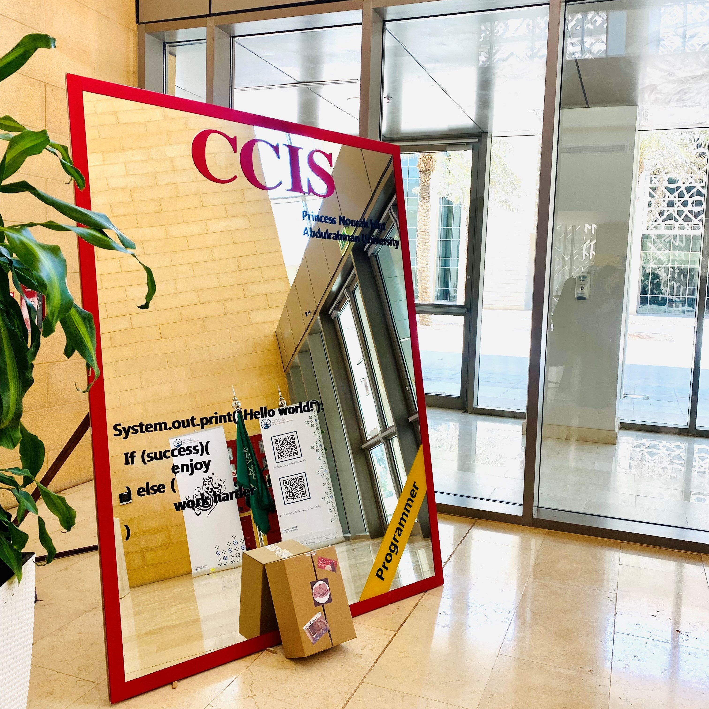

I got up early that morning due to an improper sleep during the previous night. It was brought on by my fear of beginning anew in my new life. I arrived an hour early than necessary on my first day since I was worried about being late and chose to spend some time at the cafe shop next to the university. I wanted to know what was going to happen next, therefore I was hoping that time would pass much more quickly. When it was finally the time to head back to the campus, I hoped for everything to go on smoothly, just as how I expected it.
